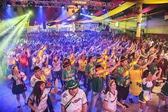
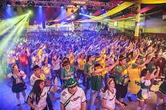

História de Missal
Missal é um município localizado no Oeste do Paraná, conhecido por sua rica história e desenvolvimento agrícola. Fundado na década de 1960, a cidade cresceu com a chegada de colonos de diversas partes do Brasil. Missal, uma cidade acolhedora, que cultiva as tradições alemãs, herdadas de seus pioneiros, teve sua formação a partir do desmembramento do município de Medianeira e a data oficial da sua criação foi em 30 de dezembro de 1981, por meio da Lei Estadual n° 7.566. Teve sua Emancipacão Política-administrativa, no dia 01 de fevereiro de 1983, data esta que marca a posse do primeiro prefeito do Município de Missal, Luciano Kreutz, além da primeira Câmara de Vereadores de Missal, tornando assim, Missal um Município independente.
Cultura de Missal
A cultura de Missal é marcada por festas tradicionais, danças típicas e celebrações religiosas. O município valoriza suas raízes e mantém viva a cultura dos imigrantes Alemães que ajudaram a construir a nossa cidade, região próspera que tem sua renda voltada principalmente para a agricultura. Existem relíquias expostas no Museu Municipal. São objetos doados por famílias de pioneiros, à disposição para visitação em horário comercial ou com prévio agendamento. Missal tem, em sua área territorial, muitos espaços preservados, que podem ser apreciados pelos amantes da natureza ou do esporte, belas paisagens naturais e passeios náuticos junto ao Lago de Itaipu, além da cultura germânica demonstrada através das festas, da alimentação e das características físicas dos moradores. Tudo isto são atrativos imperdíveis. Na colonização de Missal desde o início predominou a população de origem germânica. Grande parte dos colonizadores que chegaram em 1962, eram da segunda geração de imigrantes alemães e trouxeram consigo características da cultura germânica expressas nas construções m chaimel, decorações, jardins floridos e na gastronomia. As tradições gaúchas são cultivadas no município por meio de festas, bailes, fandangos, rodeios de laço e churrascos.
Turismo em Missal
Missal oferece diversos pontos turísticos, como parques naturais, rios e eventos anuais que atraem visitantes de toda a região. As belezas naturais são um dos grandes atrativos do município. A praia artífical de Vila Natal surgiu com o lago de Itaipu, sendo usufruida pelos banhistas da cidade de Missal e de várias outras cidades. A Deutsches Fest é uma festa alemã realizada sem data fixa no município, conta com vários atrativos como o jogo do barril, concurso de chopp em metro, apresentações artísticas, jantares tipicamente germânicos e desfiles alegóricos. Reúne grande número de pessoas de toda a região e estado, que prestigiam a cultura germânica junto aos missalenses.
 

Gastronomia de Missal
A gastronomia de Missal é diversificada e deliciosa. A cidade é conhecida por seus pratos típicos, que combinam influências de várias culturas, especialmente a italiana e a alemã.
Localização de Missal
Venha Conhecer nosso Município
O Município de Missal, conforme senso de 2022, possui 11.064 habitantes, grande parte vivendo na zona rural. Cidade próspera banhada pelo lago de Itaipu.